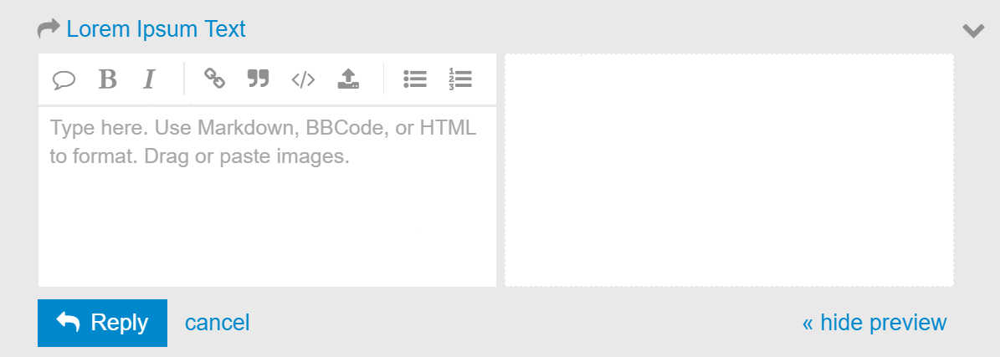

Participando
Para participar das discussções da OKBR é preciso estar logado.
Interagindo de leve...

Assim como no Medium, Facebook, etc. o ambiente não deixa de oferecer os Like's, para manter uma chama de vida em meio ao conteúdo estático dos posts.
Importante: o significado usual do like nas discussões do DiscussOKBr (e do Discuss geral) é "eu endosso esse comentário".
Ocasionalmente, surgem pesquisas de opinião (voting pools), no corpo do tópico ou de alguma das respostas. Basta clicar na opção e votar.
Enfim, participando!
O fundamental é editar, redigir seu texto para criar tópicos ou respostas. A caixa de texto é simples, é só digitar:

Usando a barra de comandos de formatação vai perceber que ela cria "marcas" como circundar a palavra com o caracter _ para obter itálicos. No exemplo ilustrado "love" sem itálico se torna "love" com itálicos no lado direito, que é a versão renderizada (decorada) do texto.
Marcas especiais ao editar
As marcas de texto são um recurso simples e padronizado de formatação que evita que se copie/cole "sujeira" e permite que mesmo máquinas antigas e celulares possam executar todos os comandos de edição, assim como apresentar seu texto no layout esperado. O padrão de marcação é o mesmo que o utilizado nos projetos OKBR, chama-se Markdown.
O ideal é ler este manual enquanto edita pois é muito simples e tentar simplesmente já é um treino. Elementos básicos:
| Digite | Layout resultante |
|---|---|
*Italico* |
Italico |
**Negrito** |
Negrito |
Um parágrafo. |
Um parágrafo. |
Um parágrafo após uma linha em branco.Um parágrafo. |
Um parágrafo após uma linha em branco. Um parágrafo. |
Um parágrafo após uma linha em branco.Um parágrafo.Outro parágrafo após uma linha em branco. |
Um parágrafo após uma linha em branco. Um parágrafo. Outro parágrafo após uma linha em branco |
# Título 1 |
Título 1 |
## Título 2 |
Título 2 |
### Título 3 |
Título 3 |
[Link](http://br.okfn.org) |
Link |
* Item de lista após linha em branco* Item de lista* Item de lista |
|
1. Item numerado após linha em branco2. Item numerado3. Item numerado |
|
Demais recursos de edição em outros guias
Detalhes sobre a edição de tabelas, imagens, etc.
- Commom Mark - Commomark
- ghost.org/markdown
- Markdown na Wikipedia
- Guia básico do Github
- Mais um Guia Rápido
- Guia total e completo do Github
Tem mais ...
Fique conectado, crie tópicos, descubra novas pessoas e antigas discussões.
Agora que sabe editar e interagir, não se esqueça de se apresentar!